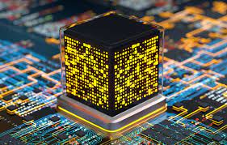

Квантовые вычисления

Квантовые компьютеры представляют собой одну из наиболее интересных технологий будущего. В отличие от классических компьютеров, которые основаны на битах, работающих в двоичной системе (логические 0 и 1), квантовые компьютеры используют кубиты, которые могут существовать в нескольких состояниях одновременно